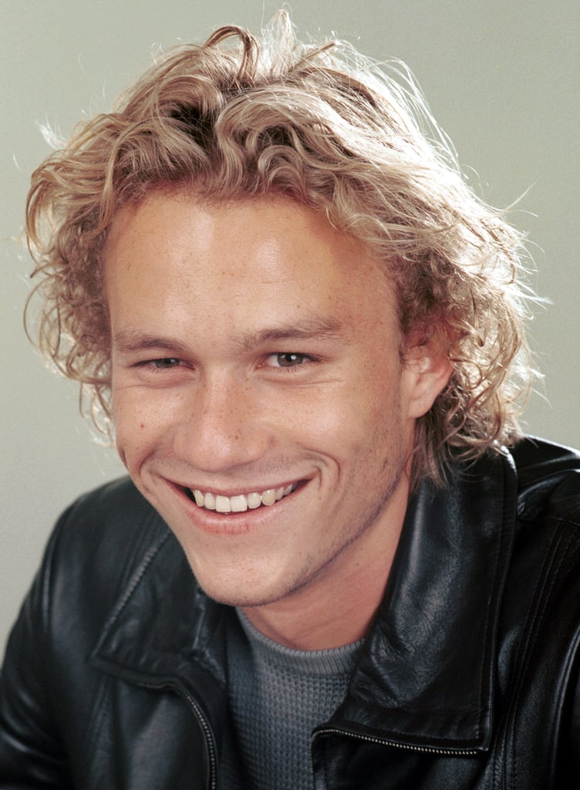

Heathcliff Andrew "Heath" Ledger (Perth, 4 de abril de 1979 — Nova Iorque, 22 de janeiro de 2008) foi um ator australiano. Venceu o Oscar de Melhor Ator Secundário pela sua atuação como Joker, em O Cavaleiro Das Trevas, de Christopher Nolan. Atuou inicialmente em filmes e na televisão australiana, no início da década de 1990. Em 1998 mudou-se para os Estados Unidos, onde prosseguiu com a carreira. O primeiro filme do qual participou no país foi 10 Things I Hate About You, lançado em 1999. Nos anos seguintes atuou em dezenove filmes, incluindo The Patriot (2000),Monster's Ball (2001),A Knight's Tale (2001), Brokeback Mountain (2005) e The Dark Knight(2008), dirigiu videoclipes de artistas como Modest Mouse e Ben Harper e planejava seguir a carreira de diretor de cinema. No dia 22 de janeiro de 2008, seu corpo foi encontrado em seu apartamento, sendo a causa de sua morte prematura divulgada apenas cerca de duas semanas depois, quando o serviço de medicina legal de Nova Iorque concluiu que havia ocorrido uma "intoxicação acidental por remédios prescritos". Ledger morreu aos 28 anos de idade, poucos meses depois de haver terminado de filmar The Dark Knight e enquanto participava das gravações de The Imaginarium of Doctor Parnassus. The Dark Knight foi o último projeto que concluiu, tendo sido lançado após a sua morte, mas, como apenas metade das cenas de seu personagem em Doctor Parnassus haviam sido filmadas, o roteiro deste foi modificado para que o ator fosse substituído parcialmente. Ledger foi reconhecido por sua interpretação no filme Dark Knight pelo papel de Coringa / Joker em diversas premiações póstumas, como o Globo de Ouro e o Oscar, na categoria de melhor ator secundário.
